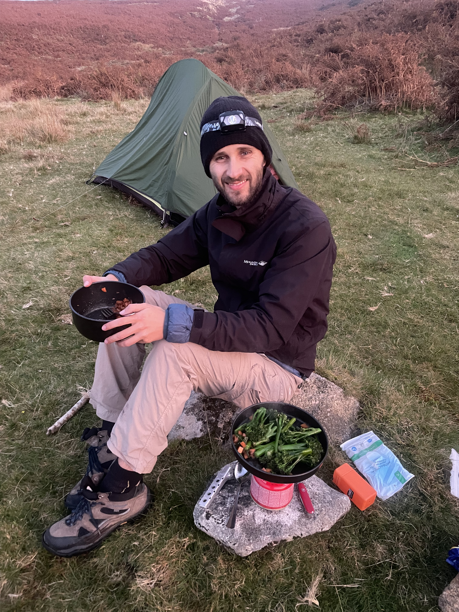
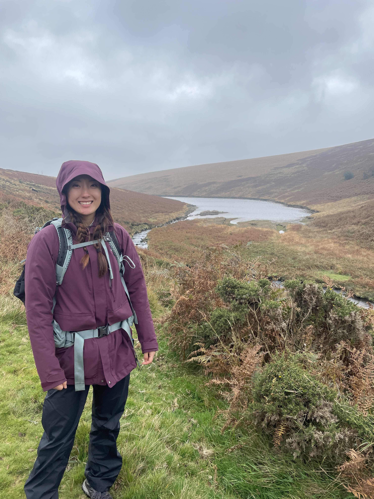

11th October 2025
We started out with an early morning train from Paddington (how very English of us!) towards Totnes which got surprisingly busy. Of course when we arrived, we had to fuel up with some local pastries for the journey ahead! We hopped off the bus near the Buckfast abbey and started our journey with our map towards Dartmoor National Park. Not 2 minutes in an errant car stalled while turning in front of us, maybe a sign of things to come. We started down winding back streets with horses and cars alike, made our way through the forests trading the cars for humans and horses for cows before reaching Holne. At this point we had already been walking for several hours and had entered a forest to follow a winding river. At some point along the river we came to a popular bathing spot, although it was too cold to take a dip. From then on the path became much less travelled and we had to fight our way over thick foliage and rocky terrain. After what seemed like an impossibly long time walking we finally reached our exit point from the river and picked our way up into Dartmoor National Pakr where we were greeted by severaly flocks of sheep! Spirits high we found the Combestone Tor and made our way south to find a camping spot. Eventually we stumbled upon a flat open area which had been camped on before next to some flowing water. With an hour before sun set we quickly set up camp and srtaed cooking some steak with hot choccy! Exhausted, we rugged ourselves up and with the added benefit of hand warmers, we slowly fell asleep.

12th October 2025
We woke up early to try and make it as far south as Ivybridge in as little time as possible because we had not made thr gound we thought we would the day before. After a breakfast of home made bread (which Sophie couldn't stomach due to it being extremely salty) we marched on towards Ryder's hill. It was much more difficult to navigate with just a map than I thought, with the hills appearing similar to each other. But we found our way with little errors and soon we reached the hill and spotted other campers. We quickly pressed on as we were losing time and made our way down a gully were I accidentall jumped into a bog and covered my foot in mud. We were in higher spirits and even saw some ponies which were very shy. Just after 10am we reached our target of the Dartmoor way, but we had exceeded our time limit of 10am so we decided to bail out and exit toward Totnes to make it home before dinner. We cooked up a chicken lunch and went on our way, passing a herd of cows and ponies again. We hopped back on a train toward London where we indulged in Domninos after a hard fought expedition!